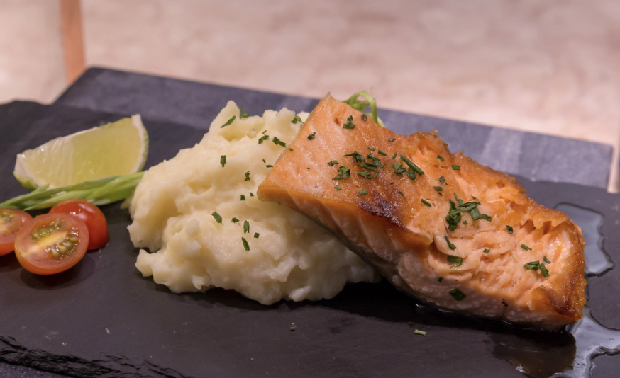

Satuéed salmon with mashed cauliflower
This recipe will make you go crazy when you blend all of the ingredients.
It is delicious!
Ingredient list:
1 tbsp of grass-fed butter (May be substituted with
1 tbsp of extra virgin coconut oil)
2 tbsp of extra virgin avocado oil
Salt and pepper, as desired
Procedure:
1. Steam the cauliflower in a pot with boiling water
2. Heat the avocado oil in a medium-sized pan
3. Add some salt and pepper to the salmon fillet/steak and
place the salmon on the pan until it is thoroughly cooked (
or cooked as desired)
4. As the cauliflower becomes soft, place it in a blender,
with the butter (or coconut oil for that matter), and add
some salt for taste.
5. Place the mashed cauliflower on a plate and place the
salmon on top of it.
6. Enjoy!
